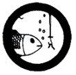

Fishing
- Catch three (3) different kinds of fish by any legal, sportsmanlike method and identify them. (One of the fish must be taken on an artificial lure using any type of rod). Clean the fish properly for cooking.
- Identify the different parts of a fishing rod; and the main parts of a spinning reel; OR show how to take care of your fishing tackle so that it will remain in good condition for a longer period of time; OR tell where the chief kind of fish are likely to be found in your area, at different times of year, different times of day, in different kinds of weather.
- Catch and identify three (3) kinds of live bait.
- Give the season for game fish in your area, explain how and why they are protected by law, and tell what fish conservation measures are being done to improve fishing resources.
|